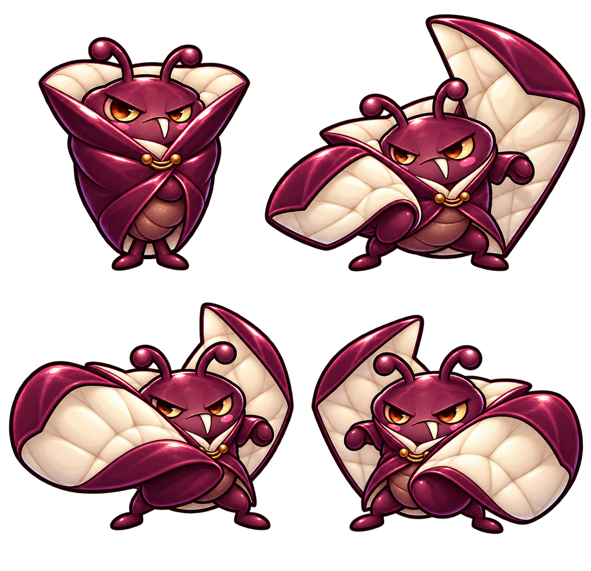

ENTWURF C · AUSGEWÄHLT
Auffächern. Schlag. Gegenschlag.
→ Weiter zur neuen Knochenanimation aus Godot
Vier gemalte Posen zeigen die Richtung: Der Graf öffnet seinen Umhang und schlägt mit den beiden Seiten zu. Kurze Schläge, erneutes Ausholen und eine erkennbare Erholung.
Ruhe
112 px · alle Posen mit demselben Maßstab:
Bewegungsstudie mit vier Posen, noch keine fertige Spielanimation und kein spielbarer Kampf. Der gezeigte Rhythmus ist ein Entwurf. Dies ist die frühere Posenstudie; den inzwischen integrierten Kampf zeigt fight.html.
Drei Entwürfe vergleichen · Kampfentwurf
Die vier generierten Originalposen
